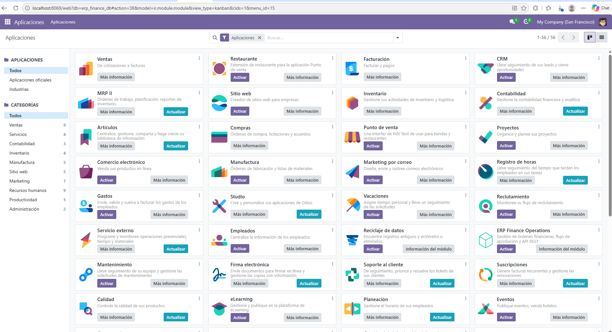
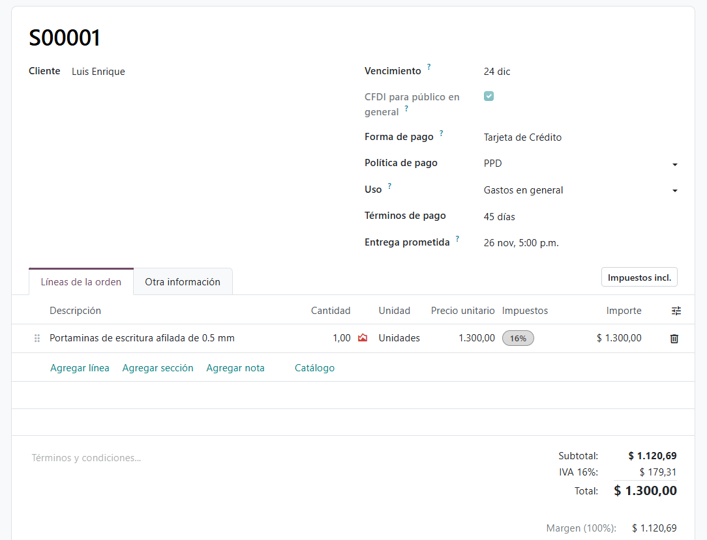

Contenedores aislados `odoo:17.0` + `postgres:15` con volúmenes persistentes y `proxy_mode = True`.
Campos calculados persistidos (`store=True`), `@api.constrains`, trazabilidad `mail.thread` y candado de margen.
Consumo externo de tasa USD/MXN y endpoint `GET /api/v1/ordenes` con validación `X-API-Key` (`401` / `200`).
Consultas directas en PostgreSQL (`psql`) y script Bash `backup_odoo.sh` con `pg_dump` + filestore.
01 / EVIDENCIA DEL DESPLIEGUE LOCAL
Entorno: localhost:8069 · Docker Desktop
Módulo montado en Odoo 17 (`erp_finance_db`)

Coloca tu captura en
assets/img/odoo-apps.png
Tras pulsar "Activar" en Odoo, guarda la captura del formulario en
assets/img/odoo-form.png
02 / SANDBOX INTERACTIVO (RÉPLICA DE LÓGICA BACKEND)
Simulación web fiel a `finance_order.py` y `api.py`
Prueba las reglas del módulo y la API REST sin instalar Docker
Control de Orden (`erp.finance.order`)
Replica `@api.depends`, `@api.constrains` y la excepción `UserError` de `action_approve()`.
total_cost_mxn (store=True)
$7,052.50 MXN
gross_margin_pct (Política ≥ 15%)
-8.50%
Prueba presionar Enviar a Revisión y luego Aprobar Orden para ver el bloqueo `UserError` por margen inferior al 15%. Después sube el precio de venta a
9500 y aprueba.
Chatter (`mail.thread` — Bitácora auditable)
- Registro inicializado en estado Borrador.
Consola de Prueba API REST
Replica `GET /api/v1/ordenes` implementado en `controllers/api.py`.
// Presiona un botón para inspeccionar la respuesta JSON del controlador.
03 / ARQUITECTURA Y CÓDIGO FUENTE
Componentes implementados en el repositorio
Consideraciones de despliegue en producción (Linux / Cloud)
- Seguridad de API: En entorno productivo, la llave `X-API-Key` se gestiona en `ir.config_parameter` o variables de entorno y se reemplaza `.sudo()` por un usuario técnico con permisos de solo lectura.
- Proxy Inverso y SSL: Nginx recibiendo tráfico HTTPS (443) hacia `127.0.0.1:8069` con `proxy_mode = True`, `list_db = False` y certificado automático con Certbot (Let's Encrypt).
- Persistencia y Respaldos: Volúmenes nombrados en Docker para PostgreSQL (`/var/lib/postgresql/data`) y ejecución programada de `pg_dump` + filestore vía `cron`.